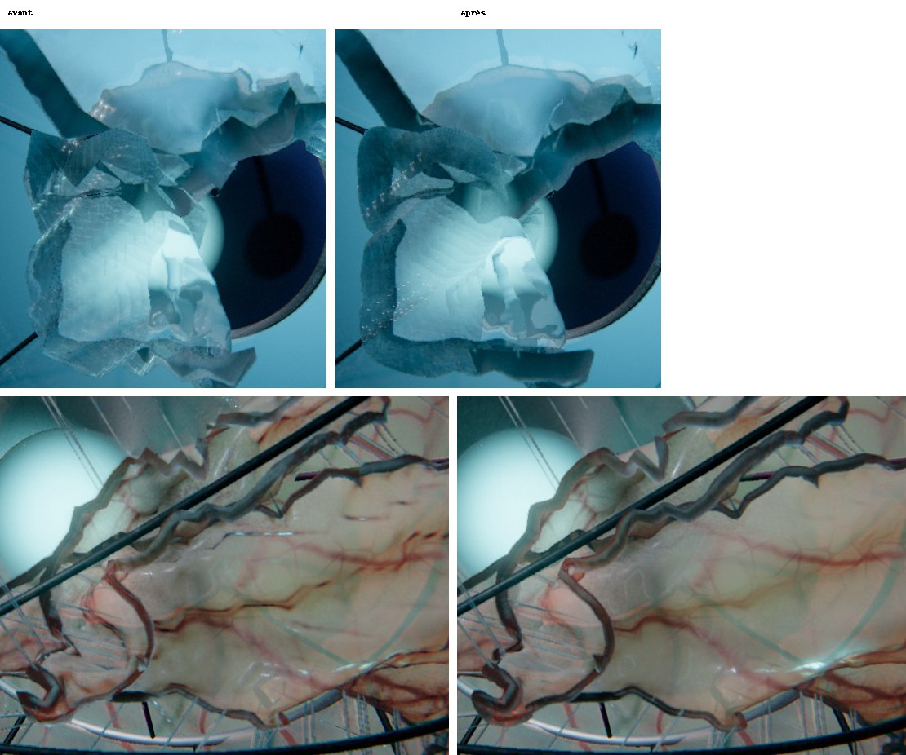
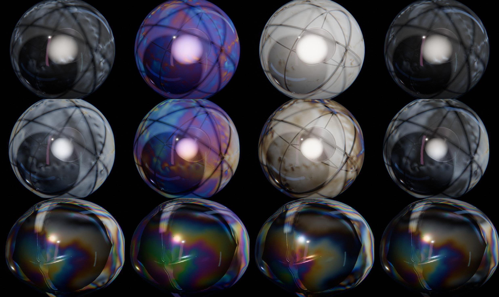

01Ce que montre la scène
La scène est une suite d'enveloppes emboîtées les unes dans les autres. Chaque couche contient une armature repliée (des lames, une cage, des épingles selon le modèle) et, au centre, la couche suivante, deux fois plus petite. Quand vient son tour, l'armature s'ouvre et déchire la membrane, et la caméra avance vers la couche suivante. La boucle se répète sans fin.
Il faut résoudre trois problèmes pour obtenir cela :
- simuler une matière qui se déchire : une membrane mince, presque inextensible, sous pression, poussée par une armature, qui cède le long de coupures crédibles (sections 02 à 05) ;
- rejouer cette simulation sans fin : l'enregistrer, la relire au ralenti, et faire revenir la scène exactement à son point de départ (sections 06 et 07) ;
- la rendre comme une vraie matière : des bords enroulés lisses, la contrainte lisible en lumière polarisée, des plis plus fins que le maillage, et la transparence (sections 08 à 11).
02Une membrane est un filet de points
src/scene/gpusim.js · solveOne()Pour l'ordinateur, la membrane est un ensemble de points, les particules, reliés par des liens. La membrane de Membrane en compte environ 20 000, posées sur une sphère et reliées en triangles. Chaque particule a une position et une vitesse. La gravité, la pression de l'air enfermé et l'armature la poussent ; les liens la retiennent à ses voisines.
Pour comprendre comment les liens retiennent les particules, on regarde le cas le plus simple : une chaîne de seize maillons de 5 cm, suspendue par un bout, chaque particule pesant 10 g.
Première idée : des ressorts
La façon classique de relier deux particules est un ressort, comme dans le chapitre « Oscillation » de The Nature of Code. Un ressort tire ses deux extrémités l'une vers l'autre avec une force proportionnelle à son allongement : F = −k (l − L), où l est sa longueur actuelle, L sa longueur au repos et k sa raideur. On additionne les forces sur chaque particule, on en déduit l'accélération, puis la nouvelle vitesse et la nouvelle position.
Avec un ressort mou, la chaîne pend et s'étire nettement sous son propre poids, comme un élastique. Une membrane doit s'étirer bien moins que cela, donc il faut des ressorts raides. Or un ressort raide oscille très vite. Si le pas de temps de la simulation dure plus qu'une petite fraction de cette oscillation, chaque pas corrige trop, le pas suivant corrige trop dans l'autre sens, et la simulation diverge. Dans la démo, à 60 images par seconde et deux pas par image, cela arrive vers 150 N/m. Pour aller au-delà, il faudrait réduire le pas de temps en proportion de la raideur.
Deuxième idée : corriger directement les positions
La dynamique par positions (Müller et ses collègues, 2007) inverse l'ordre du calcul. On fait d'abord avancer chaque particule librement, sous la gravité et avec sa vitesse, sans tenir compte des liens. Puis, pour chaque lien trop long ou trop court, on déplace directement ses deux particules pour lui rendre sa longueur. La vitesse se déduit ensuite du déplacement total pendant le pas. Une correction de position ne peut pas « trop corriger » comme une force : au pire, le lien retrouve exactement sa longueur.
Cette méthode a d'abord eu un défaut : la raideur obtenue dépendait du nombre de corrections par pas, pas du matériau. Sa version étendue, XPBD (Macklin, Müller et Chentanez, 2016), y ajoute une souplesse α = 1/k. Une contrainte souple n'est corrigée qu'en partie à chaque pas, et la partie corrigée correspond exactement à ce que ferait un ressort de raideur k. Pour un lien de longueur au repos L entre deux particules i et j :
C est l'erreur de longueur. w = 1/m est l'inverse de la masse, nul pour une particule fixée. λ accumule la correction déjà appliquée pendant le pas. On déplace ensuite xj de wj Δλ le long du lien, et xi de la même quantité pondérée par wi dans l'autre sens. Si α vaut zéro, le lien est rigide ; s'il est grand, la correction devient faible et le lien s'allonge comme un ressort mou.
// un pas : avancer librement, puis corriger les liens
for (const p of particules) { p.v.y -= g * dt; p.avant = copie(p.x); p.x += p.v * dt; }
for (const lien of liens) {
const e = sub(lien.b.x, lien.a.x), l = len(e), C = l - lien.L;
const at = alpha / (dt * dt);
const dl = (-C - at * lien.lambda) / (lien.a.w + lien.b.w + at);
lien.lambda += dl;
lien.a.x -= lien.a.w * dl * e / l; lien.b.x += lien.b.w * dl * e / l;
}
for (const p of particules) p.v = (p.x - p.avant) / dt; // la vitesse vient du déplacement- À 10 N/m, les deux chaînes s'allongent de près de 170 % : à raideur faible, les deux méthodes décrivent le même matériau.
- Montez la raideur au-delà de 150 N/m : la chaîne à ressorts finit par diverger, d'autant plus vite que la raideur est grande (en une fraction de seconde à 200 N/m). La chaîne XPBD se raidit et garde sa longueur.
- Tirez le bout des chaînes à raideur élevée : XPBD reste stable même quand on la secoue.
La membrane utilise plusieurs sortes de contraintes : l'étirement le long de chaque arête de triangle, la flexion entre les sommets opposés de deux triangles voisins (qui empêche la membrane de se plier comme un tissu sans tenue), les liens des coutures dont on parlera en section 04, et les collisions avec l'armature et avec l'œuf suivant. La pression de l'air enfermé, elle, est une force qui pousse chaque particule vers l'extérieur.
Pour aller plus loin
Chaque image enregistrée est découpée en 16 sous-pas, et chaque sous-pas fait 6 passes de corrections. Faire beaucoup de petits pas plutôt que beaucoup de passes sur un grand pas (Macklin et ses collègues, 2019) rend la raideur plus juste et amortit moins le mouvement. La démo de la chaîne fait 4 passes de Gauss-Seidel par sous-pas : aux raideurs élevées, elle est un peu plus raide que la théorie, faute de passes.
Les longueurs au repos des arêtes sont raccourcies de quelques pour cent (la précontrainte) : la membrane est tendue avant même que la pression s'en mêle, comme une peau de tambour. Une arête comprimée est huit fois plus souple qu'une arête étirée : la membrane résiste à l'étirement mais se dérobe sous la compression, comme un film mince, ce qui prépare les plis de la section 10.
03Corriger toutes les particules à la fois
src/scene/gpusim.js · solveOne()Dans la démo de la chaîne, les liens sont corrigés l'un après l'autre, et chaque correction part des positions déjà corrigées par la précédente (la méthode de Gauss-Seidel). Avec 20 000 particules, on veut au contraire les traiter toutes en même temps sur la carte graphique, qui fait tourner des milliers de calculs en parallèle. Mais deux calculs qui corrigent deux liens partageant une particule voudraient la déplacer au même moment.
Les solutions habituelles sont de répartir les liens en groupes qui ne partagent aucune particule (la coloration du graphe), ou d'additionner les corrections avec des opérations atomiques, dont l'ordre varie d'une exécution à l'autre. Membrane procède plus simplement : un calcul par particule. Chaque calcul parcourt la liste des liens de sa particule, calcule toutes les corrections à partir des positions du début de la passe, et écrit le résultat dans une copie. C'est la méthode de Jacobi. Elle n'a besoin ni de coloration ni d'atomiques, et donne le même résultat sur toutes les machines.
Le problème : additionner les corrections
Une particule de la membrane est touchée par une dizaine de contraintes. Chacune calcule de son côté le déplacement qui la satisferait, sans savoir que les autres visent souvent le même écart. Si on additionne ces déplacements, la particule va environ dix fois trop loin. On peut compenser par un facteur de réduction ω, mais le bon facteur dépend du nombre de contraintes par particule : il change dès qu'on ajoute un type de contrainte, ou quand des coutures cèdent pendant la déchirure.
Membrane fait donc la moyenne des corrections plutôt que leur somme, puis l'amplifie d'un facteur ω = 1,6 qui compense la prudence de la moyenne :
nc est le nombre de contraintes qui touchent la particule i, et Δxi(c) la correction demandée par la contrainte c. La dernière ligne de solveOne() l'écrit ainsi :
// Jacobi moyenné : stable quel que soit le nombre de contraintes
return x + d * (c.omega / max(1.0, nc)) + db / max(1.0, nbd);Le terme db rassemble les liens des coutures, moyennés à part et sans amplification : ils recollent les deux copies d'un sommet dédoublé tant que le lien tient (section 04).
- Laissez ω = 0,5 pour la somme : les deux carrés reviennent à leur forme. Ajoutez la flexion, qui donne à chaque particule environ deux fois plus de contraintes : la somme diverge, la moyenne converge toujours.
- Descendez ω jusqu'à ce que la somme converge avec la flexion (vers 0,3). Retirez la flexion : elle converge encore, mais plus lentement qu'à 0,5. Le bon réglage de la somme dépend du nombre de contraintes ; celui de la moyenne, non.
04Décider où la membrane va se déchirer
src/gen/tear.js · src/gen/prep.js · fairSeams()Pour déchirer la membrane, il faut pouvoir séparer des particules qui étaient liées. La simulation ne sait pas couper un triangle en deux : elle ne peut séparer le maillage que le long des arêtes existantes. Si on la laisse rompre n'importe quelle arête trop étirée, la déchirure suit les arêtes du maillage et prend la forme d'un escalier dont les marches font la taille d'un triangle.
Membrane prépare donc le maillage avant la simulation. Chaque triangle reçoit le numéro du lambeau auquel il appartiendra. Là où deux triangles voisins ont des numéros différents, l'arête devient une couture : ses sommets sont dédoublés, et les deux copies sont tenues ensemble par un lien qui pourra céder. La simulation décide seule de l'ordre, de la vitesse et de l'étendue de la rupture ; certaines coutures ne céderont jamais.
Le découpage suit l'armature. Pour un calice à n lames, chaque lambeau est un secteur d'angle compris entre deux lames ; pour l'iris, l'angle tourne avec la distance au pôle et les secteurs deviennent des spirales. Pour éviter des coupures en lignes droites, on calcule l'angle sur une direction légèrement déformée par un bruit fractal (quatre couches de bruit de plus en plus fines) : la coupure garde le dessin de l'armature mais zigzague à toutes les échelles.
// ph, th : angles de la direction déformée par le bruit
const s = wrap(ph - P.phi0 - PI / P.n - P.twist * th);
major[t] = floor(s / ((2 * PI) / P.n)) % P.n; // numéro du lambeau du triangle tLisser le tracé sans perdre son irrégularité
Au zigzag voulu du bruit s'ajoute un zigzag parasite, d'arête en arête, de la taille d'un triangle. Le maillage est volontairement un peu désordonné (un maillage trop régulier donnerait des reflets en motif), et les lèvres enroulées rendent ces dents très visibles. Avant de dédoubler les sommets, on lisse donc chaque tracé. Un sommet qui a exactement deux voisins sur le tracé glisse vers leur milieu m ; les autres sommets se détendent ensuite autour, pour que les triangles restent bien formés :
L'opération est répétée six fois. Les points où plusieurs tracés se rejoignent ne bougent pas, si bien que la forme d'ensemble, et donc l'irrégularité voulue, est conservée.
tear.js et fairSeams(), sur un disque plat au lieu de la sphère, sans le réseau secondaire.- Mettez l'irrégularité à zéro : les coupures sont des rayons droits, en escalier à gauche, lisses à droite.
- Remontez l'irrégularité, puis donnez de la vrille : le lissage efface les marches sans redresser les grandes ondulations.

Pour aller plus loin
Les autres armatures ont leur propre découpage : pour la couronne, une perforation en étoile autour de chaque tête d'épingle, prolongée par une cellule de Voronoï ; pour la cage, chaque face se fend de son centre vers ses sommets. Un second réseau de coutures, plus fin et plus résistant (60 points de départ au plus), greffe des embranchements près des coupures principales. Les petits îlots d'un seul triangle, isolés au milieu d'un autre lambeau, sont absorbés par leurs voisins.
05Les assauts de l'armature et le seuil de rupture
src/gen/kin.js · struggle() · src/scene/gpusim.js · bondsK()Une membrane qui cède au premier contact ressemble à un ballon qui éclate : on ne voit ni la résistance de la matière, ni l'effort de ce qui pousse. Dans la scène, l'armature mène donc de deux à quatre assauts de plus en plus forts avant de s'ouvrir : elle pousse, recule, pousse encore.
Les assauts
Le déploiement de l'armature est décrit par un nombre u qui va de 0 (repliée) à 1 (ouverte). Une fraction f de ce déploiement, entre 0,5 et 0,62, est réservée aux assauts. Pendant cette fraction, l'ouverture réelle ne suit pas u : elle monte et redescend n fois, chaque fois un peu plus haut. L'ouverture finale occupe le reste du déploiement.
a est la force des assauts et n leur nombre ; k est le numéro de l'assaut en cours et v la progression dans cet assaut, de 0 à 1. Le facteur entre parenthèses fait croître la force d'un assaut au suivant, et le sinus au carré fait partir et revenir chaque assaut à vitesse nulle. La même fonction est écrite trois fois à l'identique : pour le mouvement de l'armature, pour son dessin, et pour la simulation. La membrane heurte donc exactement l'armature que l'on voit.
Quand une couture cède
Un lien de couture cède quand l'étirement des arêtes autour de lui dépasse un seuil. Ce seuil est mesuré sur la membrane déjà gonflée et au repos, plus une marge propre à chaque lien, tirée au hasard à ± 30 % : les coutures ne cèdent pas toutes en même temps. Si l'on s'en tenait là, la membrane céderait dès le premier assaut, ou jamais. Le seuil passe donc par trois régimes :
- interdit : jusqu'à 92 % de la durée des assauts, aucune couture ne peut céder ;
- gardé : le seuil est relevé de 70 % (la garde), puis cette marge disparaît progressivement à la fin des assauts ;
- facilité : après les assauts, le seuil baisse progressivement, jusqu'à 85 % de moins (la fatigue), et la poussée finale ouvre la membrane.
Après la première rupture, l'air enfermé s'échappe et la pression décroît exponentiellement. Ensuite, un « dégrafage » fait avancer la rupture le long des coutures, de l'avant (le pôle) vers l'arrière : chaque couture reçoit un instant d'ouverture qui dépend de sa position.
- Comparez 0 et 3 assauts. Sans assaut, les lames poussent une seule fois et la membrane cède dès que l'étirement d'une couture atteint son seuil. Avec trois assauts, l'étirement monte à chaque poussée pendant la zone où la rupture est interdite, et la membrane ne cède qu'à la poussée finale.
- Réduisez la force des assauts : les poussées se voient moins sur la membrane, mais la rupture arrive au même moment, puisqu'elle est réglée par le calendrier des seuils.
Pour aller plus loin
Avec ts la fin des assauts et e une rampe douce de 0 à 1 (un lissage du cinquième degré), le seuil d'étirement d'un lien vaut :
Quand une couture s'ouvre, quelques liens laissent un filament, construit au moment du dessin : il s'étire et s'amincit à volume constant, ploie, puis claque (six sur dix claquent tôt). Il est fait de deux tubes, un par moitié, qui partagent leur anneau du milieu tant que le fil tient. Avec un seul tube, un tronçon enjamberait après le claquage l'écart entre les lèvres et tracerait de longues lignes à travers l'image. Sur les matières humides, un fil qui s'amincit se résout en gouttelettes espacées d'environ neuf rayons, par l'instabilité de Plateau-Rayleigh, celle qui découpe en gouttes un mince filet d'eau.
06Enregistrer la simulation et la relire au ralenti
src/scene/gpusim.js · packPos(), at()Simuler 20 000 particules avec 16 sous-pas par image prend environ 5 secondes par couche, bien trop pour le faire pendant l'animation. La simulation d'une couche est donc calculée une seule fois, pendant l'écran de chargement : 160 images, soit 3,6 secondes de temps physique. Les positions de chaque image sont enregistrées dans la mémoire de la carte graphique, et le rendu les relit.
Seize bits par coordonnée
Stockées en nombres à virgule de 32 bits, les positions de trois couches occuperaient 152 Mo. Chaque coordonnée est donc ramenée à un entier de 16 bits, entre −4 et 4 (la membrane au repos a un rayon de 1). Le pas de l'arrondi vaut 8 / 65 535 ≈ 1,2·10⁻⁴, un demi-centième de la longueur d'une arête : invisible, et la mémoire est divisée par deux.
let q = x / 8.0 + 0.5; // [−4, 4] → [0, 1]
return vec2u(pack2x16unorm(q.xy), pack2x16unorm(vec2f(q.z, 0.0)));Relire au ralenti sans à-coups
Au moment de la rupture, la caméra ralentit (section 07), et une image enregistrée doit couvrir plusieurs images affichées. Il faut donc calculer des positions entre deux images enregistrées. L'interpolation linéaire, une ligne droite d'une image à l'autre, donne une vitesse constante sur chaque intervalle, qui change brusquement à chaque image enregistrée : les lambeaux avancent par saccades. La relecture utilise une courbe de Catmull-Rom, qui passe elle aussi par les images enregistrées mais tient compte de l'image d'avant et de celle d'après. Sa vitesse varie sans saut :
p1 et p2 sont les images qui encadrent l'instant voulu, p0 et p3 leurs voisines, et t, entre 0 et 1, la position entre p1 et p2.
- Montez le ralenti à 8 ou 10 images affichées par image enregistrée et regardez les deux points : le rouge accélère et freine par à-coups, le doré glisse.
- À 1 image affichée par image enregistrée, il n'y a pas de ralenti et les deux méthodes donnent le même résultat.
Pour aller plus loin
La même passe de calcul, à chaque image, prépare tout ce dont le rendu a besoin. Elle calcule les normales, soudées à travers les coutures intactes puis lissées sur les voisins immédiats, parce que le maillage simulé est volontairement désordonné et que le reflet dessinerait ses arêtes. Elle calcule aussi la courbure, la dilatation de surface J (le rapport de l'aire courante à l'aire au repos), l'endommagement près des coupures et les sommets des lèvres. Une couche close ou finie, dont l'image n'a pas changé, n'est pas recalculée.
07Une plongée qui se répète à l'identique
src/scene/nest.js · src/main.js · choreo()La caméra traverse une couche, puis la suivante, toujours vers l'avant. Pour que la boucle soit parfaite, la scène doit redevenir exactement identique à elle-même au bout d'un tour, sans fondu pour masquer le raccord.
Tout dépend de la profondeur relative
On numérote les couches par leur rang d dans l'emboîtement, et on mesure l'avancée de la caméra τ en couches. Ce qui compte pour une couche, c'est sa position par rapport à la caméra, x = d − τ. Son rayon, son orientation, l'instant de son éclosion et sa visibilité sont tous des fonctions de x seulement. Le rayon diminue d'un facteur q d'une couche à la suivante, et les modèles de couche (calice, iris, cage…) reviennent dans le même ordre tous les N rangs :
Chaque couche fait donc de 42 à 50 % du rayon de celle qui l'enveloppe. Quand la caméra a avancé de N couches, chaque couche a pris la place exacte d'une couche de même modèle : la scène à τ + N est identique à la scène à τ. La simulation enregistrée et l'armature d'une couche avancent elles aussi avec x, et rien d'autre ne les pilote. L'éclosion se joue entre x = 2,25 à 2,5 et x = −0,35.
Il reste à éviter de construire de nouvelles couches en route. Le nid dispose d'un nombre fixe d'emplacements, des couches toutes prêtes (huit ou neuf selon N). L'emplacement j montre toujours le modèle j mod N. Quand une couche passe derrière la caméra (x = −2,2), son emplacement est réutilisé tout au fond (x = 3,6), pour une couche du même modèle. Les deux bords sont invisibles, l'un dans la brume derrière la caméra, l'autre dans la lueur du cœur, et le changement ne se voit pas.
- Arrêtez la plongée, puis cliquez sur « Avancer de N couches » : l'image de gauche ne change pas, seuls les numéros des emplacements ont tourné.
- Changez N et suivez un point d'un bord à l'autre : il reprend du service au fond avec la même couleur, donc le même modèle.
Un ralenti qui ne décale pas la boucle
La rupture dure une fraction de seconde. Pour qu'on la voie, la caméra ralentit autour de chaque rupture, puis rattrape son retard. On déforme pour cela le temps : l'avancée τ de la caméra s'écarte de l'horloge t près de chaque instant de rupture k, puis la rejoint.
a, entre 0,35 et 0,75, règle la force du ralenti, et w, entre 0,3 et 0,45 couche, sa demi-largeur. Hors de la fenêtre |x| < 1, le terme est nul. Comme K(±1) = 0, la caméra a exactement rattrapé l'horloge en sortant de la fenêtre : le ralenti ne décale rien, et la boucle est préservée. À la rupture, la vitesse de la caméra tombe à 1 − a (40 % de la vitesse normale pour a = 0,6). De part et d'autre, elle dépasse un peu 1 pour rattraper le retard, d'au plus 0,65 a.
choreo() reprise du projet. En haut, la vitesse de la caméra dτ/dt ; en bas, τ(t) et la diagonale τ = t (pointillés). Les traits verticaux marquent les ruptures.- Poussez la force vers 0,95 : la vitesse frôle zéro à la rupture sans jamais devenir négative, et la courbe τ(t) rejoint toujours la diagonale entre deux ruptures.
Pour aller plus loin
Lors de la génération de la scène, le ralenti de la caméra est centré sur l'instant moyen où les assauts de l'armature se terminent. Chaque œuf repose dans une coupe, au centre de l'armature de la couche précédente, et toutes les couches tournent à la même vitesse : leur orientation relative est fixe. Une armature qui passe derrière la caméra s'efface par un tramage, qui écarte une part croissante de ses pixels selon un motif renouvelé à chaque image, lissé ensuite par l'anticrénelage temporel (la moyenne des images successives). Son ombre s'efface avec elle. Mesurée sur une boucle entière, la luminance moyenne de l'image varie sans à-coup.
08Des bords arrondis : les triangles PN
src/gen/tess.js · src/scene/membrane.js · pnPosition()Vingt mille particules suffisent pour le mouvement, mais pas pour le dessin. Une lèvre enroulée ne compte que cinq ou six particules sur son tour, et si on relie ces particules par des triangles plats, elle s'affiche comme un polygone.
Pour le dessin, chaque triangle simulé est découpé en n² petits triangles (n = 4 pour les couches proches, soit 16 fois plus de triangles, n = 2 au loin). Encore faut-il placer les nouveaux sommets ailleurs que sur le triangle plat. On utilise les triangles PN (Vlachos et ses collègues, 2001) : sur chaque triangle, une surface courbe construite à partir des seules positions P et normales N de ses trois coins. Sur chaque arête, la courbe part de chaque coin tangente à la surface en ce coin. Ses points de contrôle sont les tiers de l'arête, ramenés dans le plan tangent de leur coin :
Le terme soustrait retire la part de l'arête qui sort du plan tangent du coin i. La surface ne dépend que de chaque triangle et de ses coins : deux triangles voisins calculent exactement la même courbe sur leur arête commune, et aucune fente ne s'ouvre entre eux.
pnPosition() restreinte à une arête). Les normales sont, comme dans le projet, la moyenne de celles des segments voisins.- Enroulez la lèvre : le maillage plat reste fait de segments droits qui se coupent en angles, la courbe PN passe par les mêmes particules en arrondissant chaque angle. Le bandeau donne l'écart entre les deux, en part de la longueur d'une arête.
- Affichez les points de contrôle et passez n de 1 à 8 : n ne change que le nombre de points pris sur la même courbe.
Pour aller plus loin
La normale suit une interpolation du second degré, dont les milieux d'arête sont réfléchis par le plan médian de l'arête : un pli en S garde son ombrage. Un sommet de coin ou d'arête est écrit sous une forme canonique, la même depuis les deux triangles qui le partagent, pour que le calcul donne exactement la même position des deux côtés. Le passage d'un niveau de détail à l'autre ne change que le nombre d'échantillons pris sur la même surface.
09Rendre la contrainte visible : la photoélasticité
src/scene/photo.js · src/scene/gpusim.js · STRAINUn film de plastique ou de gélatine étiré dévie la lumière différemment selon sa direction de vibration (sa polarisation) : il devient biréfringent. Placé entre deux filtres polarisants, il se couvre de franges colorées qui dessinent la contrainte, invisible à l'œil nu. C'est la photoélasticité, que les ingénieurs utilisent pour voir où une pièce travaille. Membrane calcule ces franges à partir de sa propre simulation.
Mesurer l'étirement de chaque triangle
On compare chaque triangle à sa forme au repos. Le gradient de déformation F est la matrice 2 × 2 qui envoie le triangle au repos sur sa forme actuelle ; on en tire les deux étirements principaux λ1 ≥ λ2 (le plus et le moins étiré) et leurs directions d1, d2. Seule compte la différence entre les deux directions :
Un étirement égal dans toutes les directions donne λ1 = λ2, donc E = 0 : un œuf gonflé uniformément reste noir entre deux polariseurs croisés. La déformation est mesurée depuis la forme au repos, si bien qu'un lambeau étiré de façon permanente garde sa couleur, comme un film plastique qu'on a tiré.
De l'étirement à la couleur
La lumière qui traverse la membrane se sépare en deux vibrations perpendiculaires qui avancent à des vitesses légèrement différentes. À la sortie, l'une est en retard sur l'autre de Γ = C Δ h, où Δ est l'écart d'étirement vu par la caméra, h l'épaisseur traversée et C une constante du matériau (4 200 nm pour la gélatine, 2 600 pour le latex). Selon la longueur d'onde, ce retard fait que la lumière passe ou non le second polariseur : certaines couleurs s'éteignent, d'autres restent. Le rendu suit la polarisation à travers chaque filtre par le calcul de Jones (une matrice 2 × 2 par élément optique), pour 12 longueurs d'onde de 400 à 700 nm, puis recompose la couleur perçue. On obtient l'échelle de teintes de Michel-Lévy, celle qu'on lit au microscope polarisant.
photo.js. En bas, l'échelle de teintes du mode choisi, pour un retard de 0 à 2 500 nm.- Montez la traction : les franges se resserrent là où le film est le plus étiré, entre les doigts.
- Montez le gonflement uniforme à traction nulle : le film reste noir, puisque l'étirement est le même dans toutes les directions.
- Passez en linéaire et tournez les polariseurs : des bandes sombres, les isoclines, balaient le film là où la direction de l'étirement s'aligne sur un polariseur. En circulaire, elles disparaissent et il ne reste que les franges d'égal retard.

Pour aller plus loin
Le tenseur E est moyenné par aire autour de chaque particule, soudé à travers les coutures et lissé. Au pixel, il passe dans le repère de la vue et se projette sur le plan de l'image, ce qui donne l'écart Δ et l'axe θ. L'épaisseur h est amincie en 1/J quand la membrane s'étire et allongée quand on la voit de biais. La lame teinte sensible facultative vaut 550 nm à 45°. Les intensités sont pondérées par les fonctions colorimétriques CIE 1931 (approximation analytique de Wyman, Sloan et Shirley) et normalisées sur le blanc.
Chaque couche est traitée comme si elle était seule entre ses deux polariseurs : les retards de couches successives ne se composent pas. Seule la lumière transmise passe entre les polariseurs ; la diffusion dépolarise, et le reflet reste blanc. Le calcul coûte environ 3 ms par image, et seulement si la lumière polarisée est allumée.
10Des plis plus fins que le maillage
src/scene/membrane.js · wrinkleSlope()Tirez un film étirable entre deux doigts : il se couvre de plis fins, parallèles à la traction. Sur les côtés, le film est comprimé, et un film mince ne supporte pas la compression : il flambe, c'est-à-dire qu'il se dérobe en ondulant au lieu de raccourcir. Sur la membrane, ces plis ont une longueur d'onde de l'ordre de 8 % du rayon, à peine trois arêtes du maillage : bien trop peu pour que la simulation les reproduise.
La simulation ne voit pas les plis, mais elle sait où la matière est comprimée, dans quelle direction k et de combien. On dessine donc les plis au moment du rendu, sans les simuler : on modifie la normale de la surface pour faire croire à une ondulation. Trois grandeurs suffisent :
- la compression c, ce qui manque à la direction la plus courte pour retrouver la longueur relâchée ;
- la longueur d'onde λ, qui suit la loi de Cerda et Mahadevan, λ ∝ √(t L), avec t l'épaisseur et L une longueur de la zone tendue : une bulle de savon plisse fin, une gélatine large ;
- l'amplitude A = (λ/π) √c, choisie pour que l'ondulation absorbe le surplus de longueur de la matière comprimée.
Reste à dessiner un motif de bandes qui suit la direction k, avec un peu d'irrégularité. Membrane utilise un bruit de phaseurs (Tricard et ses collègues, 2019) : une somme de petites ondes orientées selon k, chacune sous une enveloppe en cloche, dont on ne garde que la phase. Garder la phase seule donne des bandes de contraste constant, qui suivent l'orientation sans s'éteindre par endroits.
wrinkleSlope(), en deux dimensions. Le bouton remplace la phase seule par la somme des ondes elle-même (le bruit de Gabor ordinaire).- Changez l'épaisseur : les plis s'élargissent comme la racine de l'épaisseur.
- Mettez la traction à zéro : plus de compression, plus de plis.
- Passez au bruit de Gabor : l'orientation est la même, mais le contraste s'éteint par plaques.
Pour aller plus loin
La direction de compression k est le vecteur propre de C = F⊤F pour sa plus petite valeur propre, et elle est gardée dans le repère au repos, pour que les plis restent attachés à la matière quand elle bouge. Il y a un noyau d'onde par cellule de 1,5 λ. La pente 2√c cos φ k est exprimée à l'écran par les dérivées de la position au repos, puis perturbe la normale. Seuls les pixels où la pente dépasse 2° évaluent le bruit, et les plis de moins de trois pixels s'effacent.
11La transparence de la membrane
src/scene/nest.js · src/scene/membrane.jsLa membrane laisse voir ce qu'elle contient, en le floutant et en le teintant. La lumière qui la traverse est atténuée exponentiellement avec l'épaisseur traversée (loi de Beer-Lambert), et davantage là où passent des vaisseaux. Vue de biais, la membrane est traversée sur une plus grande épaisseur (h divisé par le cosinus de l'angle de vue) : ses bords paraissent plus denses que son centre, ce qui aide à distinguer la membrane de ce qu'elle enveloppe.
Pour montrer ce qui est derrière une membrane, le rendu prend une copie de l'image juste avant de dessiner cette membrane, avec des versions réduites et floues de cette copie, et y lit le fond. Les couches intérieures doivent donc être déjà dessinées : l'ordre est fixé, armatures et filaments d'abord, puis les faces arrière de l'extérieur vers l'intérieur, puis les faces avant de l'intérieur vers l'extérieur. Le flou dépend de la distance entre la membrane et ce qu'on voit derrière : une lame qui touche la membrane reste nette, le lointain se dissout.
Pour aller plus loin
L'épaisseur relative de la membrane vaut irrégularité × vaisseaux × fibres / J, et l'absorption suit celle du sang (forte dans les gros vaisseaux, faible dans les capillaires). Six à huit copies de l'image par image seraient coûteuses. Quand la caméra est hors d'une couche (x > 0,35), la face arrière de cette couche n'est vue qu'à travers sa face avant, qui floute déjà : une copie propre à la face arrière ne servirait qu'à flouter deux fois. Cette face est alors mélangée directement à l'image par la carte graphique : lumière propre + fond × transmission moyenne.
Entre x = 0,10 et 0,35, la version avec copie perd progressivement réfraction, flou, teinte, plis et reflets, jusqu'à donner exactement l'image de la version mélangée, brume comprise. Mesuré de part et d'autre du seuil, l'écart est celui de deux images voisines. Gain : 3,5 ms par image. La version mobile applique la même idée aux faces avant lointaines (au-delà de x = 0,8) : sur les cartes graphiques des téléphones, qui calculent l'image par petits carreaux en mémoire rapide, chaque copie oblige à vider cette mémoire.
Sur une normale interpolée, les variations d'un pixel à l'autre sont constantes par triangle. Un anticrénelage du reflet classique, qui élargit le reflet là où la normale varie vite, dessinerait donc les facettes dans le reflet d'une peau humide. Membrane estime donc la variation de la normale dans le pixel à partir de la courbure calculée à chaque sommet, qui est continue d'un triangle à l'autre, multipliée par la taille du pixel à cette distance.
12Récapitulatif
Pendant le chargement, chaque couche est préparée puis simulée. La préparation découpe le maillage en futurs lambeaux, lisse les coutures et dédouble leurs sommets (section 04). Puis chaque sous-pas de la simulation :
- fait avancer chaque particule librement, sous la pression et la résistance de l'air ;
- corrige les positions en six passes, chaque particule faisant la moyenne des corrections de ses contraintes (sections 02 et 03) ;
- repousse les particules hors de l'armature, qui mène ses assauts (section 05), et hors de l'œuf suivant ;
- teste chaque lien de couture contre son seuil du moment (section 05) ;
- déduit les vitesses des déplacements.
Toutes les seize sous-pas, les positions sont enregistrées sur 16 bits (section 06). Pendant l'animation, chaque image relit ces positions par Catmull-Rom au temps donné par la plongée (sections 06 et 07), puis le rendu courbe les lambeaux, ajoute les franges et les plis, et laisse voir les couches intérieures (sections 08 à 11).
13Budget
La préparation tourne dans un worker, et la simulation sur le GPU pendant l'écran de chargement. Le rendu ne fait que relire et poser.
| Étape | Où | Coût |
|---|---|---|
| Préparation d'une couche (maillage, motif, coutures, tables, poses de l'armature), 20 000 particules | worker | 0,4 s |
| Simulation d'une couche (160 images, 16 sous-pas, 6 passes) | GPU | ~5 s |
| Scène de trois couches prête (panneau de navigateur masqué, donc ralenti) | GPU | 15 à 20 s |
| Images enregistrées, 16 bits par coordonnée | mémoire | ~25 Mo / couche |
| Image complète, qualité haute, 1,9 Mpx, plis compris | GPU | ~26 ms |
| dont reflets en espace écran | GPU | 3,4 ms |
| dont copies de l'image | GPU | ~2,5 ms |
| dont maillage fin des couches proches (×16) | GPU | 1,1 ms |
| dont bloom · plis · occlusion ambiante (8 échantillons) | GPU | 0,7 · 0,6 · 0,5 ms |
| Photoélasticité (déformation et intégration spectrale), si allumée | GPU | ~3 ms |
La version mobile simule un maillage plus grossier (36 subdivisions au lieu de 44, deux tiers des particules), 120 images au lieu de 160, 13 sous-pas au lieu de 16 : préparation, calcul et mémoire presque divisés par deux, avec la même dynamique de déchirure. Les plis y évaluent 8 cellules au lieu de 27, la photoélasticité 7 longueurs d'onde au lieu de 12.